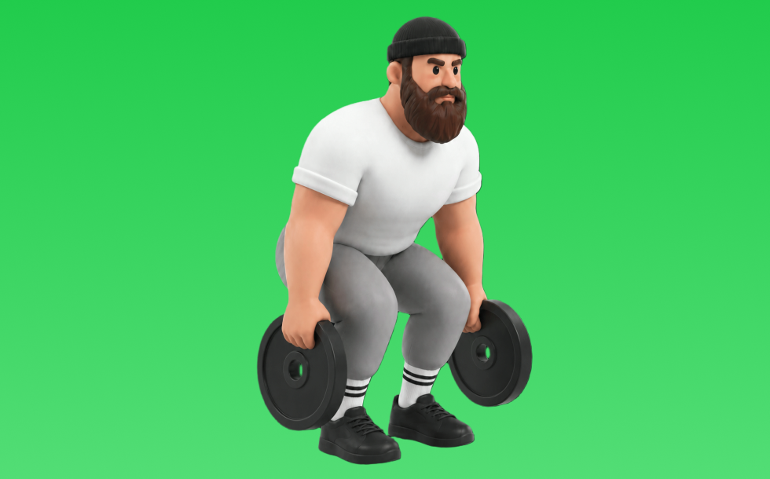

プレートピンチ

プレートピンチとは、プレートを使って「動かす」動作で握力、前腕（＋体幹）を鍛える種目です。狙った部位に意識を向けやすいのが特徴で、反動を抑えてコントロールしながら反復します。握力向上や前腕の発達が期待できます。
- 対象部位
- 腕
- 器具
- プレート
- 記録形式
- 重量・回数
- 別名
- ピンチグリップ
YouTube動画
-
握力トレーニング ピンチ力トレーニング
-
筋トレ 握力トレーニング ピンチ力 グリッパーの補助
-
【ダンベル筋トレ】プレートピンチで大胸筋を鍛えましょう！【バストアップチャレンジ】
-
[握力]のトレーニング vol.3 [ピンチグリップ]
-
筋トレ動画！ ピンチ・プレス（胸）で 大胸筋を鍛える
-
【大胸筋】スーパー収縮プレートプレス！胸を追い込む種目を紹介！
-
フォームを固めたい方に伝えたい【大事な5ポイント】全てを決めるのはここ!!
-
Build a Bigger Chest with the Plate Pinch/Svend Press | Mark Bell
YouTubeショート
-
How to - Plate Pinch
-
【検証】握力が弱い人は必見？ #筋トレ
-
【ベントオーバーロウ正しいやり方】理想と間違い #ボディメイク #プロテイン #music #仙台 #仙台パーソナルジム #仙台ジム #ビフォーアフター #motivation #筋トレ
-
ベンチプレスのセーフティー台を使ってピンチトレーニング
-
正しいサイドレイズ4つのポイント #筋トレ
-
工藤監督の魔法でチカヤのコントロール激変。#shorts
-
【セルフネイル】1ヶ月浮きなし🙅♀️長さだしルーティーン💅✨ #asmr #nails
-
㊗️100万再生🎉とんでもねぇ前腕。
-
【筋肉つかない】自重トレ3種目 #自重トレーニング #筋トレ #フィットネス
-
握力を100日間必死に鍛えた結果。
-
150kgのダンベルを扱える数少ない人類 【世界の筋肉】
-
セットクローズ握力トレーニングやればやるほど30kg〜40kg以上下がる！【これはいったい？】
-
インチキ過ぎるパーソナルトレーナー #shorts
-
セルフネイル｜失敗しない長さ出し方法♡♡♡#ジェルネイル#セルフネイル#長さ出しネイル#nails #SHEIN#nailtutorial #nailart#クッションジェル
-
5kgのダンベルで自宅で5分！バキバキの前腕を作る筋トレ！#shorts #筋トレ #fitness
-
【ジェルでの長さだし💅】3ステップ🫶💜#ジェルスカルプ #スカルプネイル
-
【今すぐやめろ】前腕が成長しなくなる握力トレやカール(科学的腕トレ) #shorts
-
【怪力】握力の鍛え方#shorts
-
1000円以下で前腕が太くなる！？
-
山本由伸: 150キロ中盤の豪速球の秘密⑤
-
素手デッドリフト250kg
-
家トレを始めた人を見たジム常連の反応 #shorts
-
The Best & Worst Forearms Exercises
-
ジェルスカやり方｜ジェルスカルプ長さだし
-
超解説❣️長さ出せるコレのやり方✨#ネイル #セルフネイル #ネイルデザイン #おかば #ジェルネイル #tiktok #100均 #プチプラ #解説 #nailart #shorts
-
#筋力トレーニング#ダンベルカール30KG#気合いチャンネル【浜口京子】
-
【牽制】初見では絶対騙される井上温人投手の牽制テクニック #井上温人#巨人 #侍ジャパン #牽制#野球#baseball #ボーク#usa #台湾 #プレミア12 #
-
マッチョってダンベル何キロまで持てる？#shorts #筋トレ #ダンベル何キロ持てる
-
ほぼ懸垂だけで上半身を鍛えた結果#トレーニング #懸垂 #筋肉 #公園
-
【パワプロ】この男のせいで「この特殊能力」が生まれた… #プロ野球 #shorts
-
ピンチカード 握力トレーニング#shorts
-
How to coil and pinch technique a clay vase. #shortvideo #ceramic #pottery #clay #art #shorts #arts
-
【絶対ダメ】パーソナルジムで絶対にやらないで欲しいこと。
-
胸と二の腕を使う筋トレ:20kgプレート(2016.4.10)
-
【平良海馬】コントロールを良くする方法【2022/10/16】
-
世界一簡単なジェルネイルの長さ出し。#shorts #short #スカルプ
-
ポリジェル✨直接爪にのせる方法💅#キャンドゥポリジェル#ポリジェル#ジェル長さだし
-
MUSCLE Building Paradise!!! BANA 2:1 Landmine Plate Pinch Row for Monster Back & Lats
-
【ガチタマTV】体幹や足腰を鍛える最高のストレッチ＆トレーニング”四股” ！毎日やれば強くなります #Shorts【田村装備開発】
-
24Hジムで1度は見たことある光景TOP20 第19位
動作方法
- 対象部位の力を抜かずに構える
- 反動を使わず、可動域を丁寧に使う
- 戻し動作をゆっくり行う
動作ポイント
- 可動域を急に狭めない
- 対象部位の緊張を保つ
ワンポイントアドバイス
- 肘の位置を固定すると狙った部位に効きやすい
- 回数を急がず、下ろし動作を丁寧に行う
目的別回数設定
目的や体力に応じた一般的な目安です。無理のない範囲で調整してください。
- 筋力アップ
- 1〜5回
- 筋肥大
- 6〜12回
- 持久力アップ
- 13〜20回
YouTube動画について
動画はYouTubeの公開情報をもとに表示しています。内容は投稿者によるもので、Biggrによる監修ではありません。
アプリを入手
筋トレやトレーニングの記録はBiggrにお任せください。今すぐ無料で使い始められます。